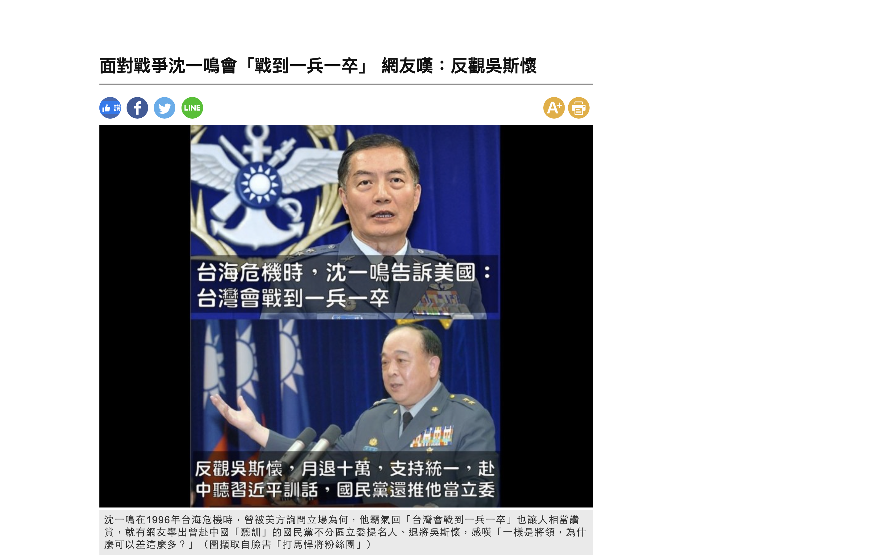
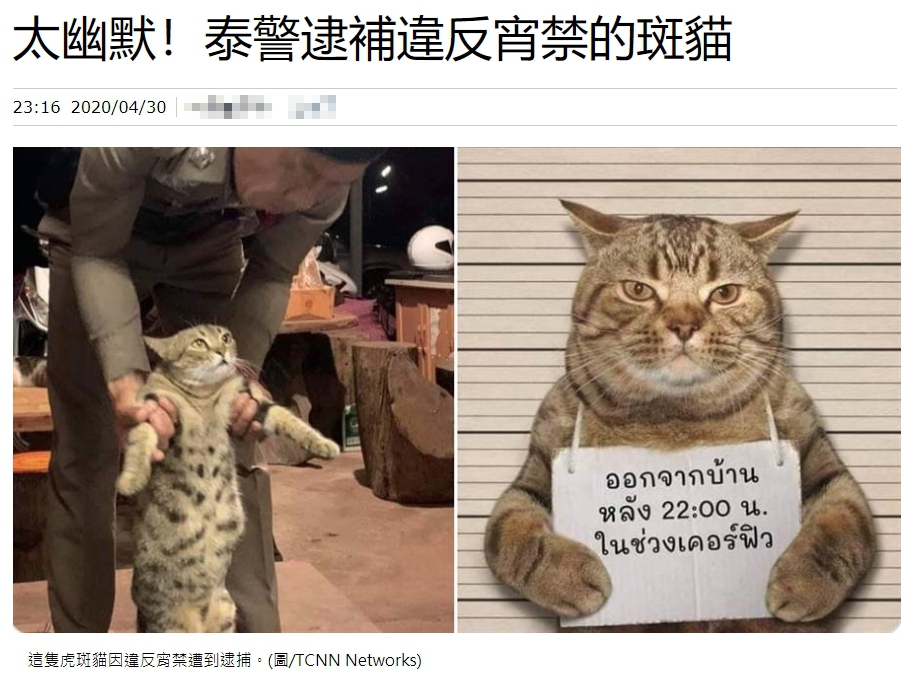

假新聞（Fake News）是隨著網路興起後，產生的新詞，用來指「捏造新聞」或「沒有事實根據的新聞」
假新聞的目的有很多，但多數是為了誤導大眾，以帶來政治、經濟、市場、或心理得到成就感和利益
通常假新聞有這些特徵
- 釣魚式標題
- 垃圾內容
- 宣傳某件事物
- 誤導性的標題
- 諷刺性內容
- 有偏見的新聞
1 / 3
媒體報「台海危機時，沈一鳴回應美詢問立場：台灣會戰到一兵一卒」
2020年1月初社群平台有訊息流傳指出：「台海危機時，沈一鳴告訴美國：台灣會戰到一兵一卒」，此訊息被某名嘴在政論節目上引述，並被多家媒體報導。當時媒體報導指出，「沈一鳴外文能力強，因此曾在1996至1999年台海危機期間執行防空警戒任務，當時他陪同國防部長與太平洋司令會談，美方詢問他的立場為何，沈一鳴霸氣回應美方：『台灣會戰到一兵一卒』，展現中華民國國軍的軍人本色，與時下一些退將到中國卑躬屈膝，高下立判。」
查核中心採訪在1996年台海危機時期，任國防部作戰次長室中將執行官的帥化民，他表示在台海情勢最險峻的時候，美方同意他以作戰單位角色，秘密代表台灣軍方，前往美國國防部，會見美國國防部中國科和蒙古科科長兼助理副部長克爾坎博。
帥化民說，他首次會見是隻身前往，主要是擔憂軍情外洩，一旦外洩，美國可能受中國施壓而生變。會中建立的「第二軌道」，是每年兩次的台美軍方秘密會議，美方出席對象有國務院、國防部、中情局等相關單位官員，有時會有美軍太平洋司令部參謀長出席會議。台海危機期間，美國謹守一中原則，不可能有國防部部長出席此秘密會議。
▴自由時報報導假新聞。
查核中心採訪在1996年台海危機時期，任國防部作戰次長室中將執行官的帥化民，他表示在台海情勢最險峻的時候，美方同意他以作戰單位角色，秘密代表台灣軍方，前往美國國防部，會見美國國防部中國科和蒙古科科長兼助理副部長克爾坎博。
帥化民說，他首次會見是隻身前往，主要是擔憂軍情外洩，一旦外洩，美國可能受中國施壓而生變。會中建立的「第二軌道」，是每年兩次的台美軍方秘密會議，美方出席對象有國務院、國防部、中情局等相關單位官員，有時會有美軍太平洋司令部參謀長出席會議。台海危機期間，美國謹守一中原則，不可能有國防部部長出席此秘密會議。

因此，帥化民指出，沈一鳴後來官職升高，頂多可能參加2000年之後的公開會議，不太可能出現如此高級別的軍事將領會面。
此外，沈一鳴當時是空軍中校，負責接法國2000幻象戰機，在會議中可能負責的是紀錄工作，以他的職務和軍階來看，不可能被美方諮詢，更不可能如傳言所說的「霸氣」回應美國詢問。時任華府駐美國代表處政治組諮議的黃介正表示，台海危機期間，台灣確實有國防部高階將領到華府與美方開會，他曾負責接待並參與部分會議，但他不曾見過沈一鳴。至於「台灣會戰到一兵一卒」，帥化民指出是政治宣示，意在提振士氣，但在軍事會議中，都是務實思考如何讓部屬犧牲到最小，因此不可能在軍事會議講出這樣的話。
此外，沈一鳴當時是空軍中校，負責接法國2000幻象戰機，在會議中可能負責的是紀錄工作，以他的職務和軍階來看，不可能被美方諮詢，更不可能如傳言所說的「霸氣」回應美國詢問。時任華府駐美國代表處政治組諮議的黃介正表示，台海危機期間，台灣確實有國防部高階將領到華府與美方開會，他曾負責接待並參與部分會議，但他不曾見過沈一鳴。至於「台灣會戰到一兵一卒」，帥化民指出是政治宣示，意在提振士氣，但在軍事會議中，都是務實思考如何讓部屬犧牲到最小，因此不可能在軍事會議講出這樣的話。
資料來源https://tfc-taiwan.org.tw/articles/1954(台灣事實查核中心)
2 / 3
媒體報導「俄國衛生部指武漢肺炎是人工病毒」
2020年2月媒體報導「全球首例官方認證 俄國衛生部指武漢肺炎是人工病毒」，內文指出：「俄羅斯聯邦官方網站上這篇名為《預防、診斷、治療新型冠狀病毒（2019-NCOV）》的報告第一版發表於1月29日，2月3日還發表了第二版。此報告是具有俄羅斯衛生部部長М.А. Мурашко級俄羅斯聯邦消費者保護局局長雙署名的一篇官方文件。報告指出，武漢病毒是一種由蝙蝠病毒和未知來源的病毒而重新組成的新病毒，它的基因排列順序有70％跟 SARS是相吻合，它不是天來源，而是一個綜合體。」
查核中心找到報導引述的俄羅斯官方文件《新型冠狀病毒（2019-nCoV）感染的預防、診斷和治療臨時準則》，左上角的署名確實為俄羅斯衛生部長穆拉什科。檢視這份文件，在第一節「病原與發病機制（ЭТИОЛОГИЯ И ПАТОГЕНЕЗ ）」中，內文先解釋什麼是冠狀病毒、如何影響上呼吸道、冠狀病毒的分類，並簡要介紹SARS、MERS病毒、中間宿主等。在文章最後二段，內文翻譯如下：
「冠狀病毒2019-nCoV推測是從蝙蝠冠狀病毒與另一株未知來源的冠狀病毒所合成的重組病毒，2019-nCoV基因序列與SARS-CoV至少有70%с吻合。...對新冠狀病毒感染發病機制的研究尚不完備，現在還缺乏對2019-nCoV相關的抗體的持續性與強度數據，受到其他冠狀病毒家族的病株感染所產生的抗體並不穩定，且仍有可能再次感染。」
查核中心進一步檢視，在「重組病毒」的相關段落及通篇內文，皆沒有提及「人為」、「人工」、「加工」、「非自然」等詞彙。文件只有說是「重組病毒」。俄羅斯衛星通訊社2月21日報導向俄國衛生部求證，俄國衛生部表示，「俄羅斯聯邦衛生部《新冠狀病毒感染預防、診斷和治療臨時方法建議》中，從未指出病毒是人工的。」
長庚大學新興病毒感染研究中心主任施信如說明，「重組病毒」是科學家用分子生物學的方法，把病毒的基因重組在一起，但自然界也有重組病毒，有時來自冠狀病毒，感染同一個宿主細胞，在病毒複製時可能拉到不同病毒當作模板，產生重組的病毒株，這在自然界經常發生。
因此媒體指稱「俄國衛生部指武漢肺炎是人工病毒」僅呈現片面事實，忽略重組病毒來自自然界的可能性，是「部分錯誤」訊息。
查核中心找到報導引述的俄羅斯官方文件《新型冠狀病毒（2019-nCoV）感染的預防、診斷和治療臨時準則》，左上角的署名確實為俄羅斯衛生部長穆拉什科。檢視這份文件，在第一節「病原與發病機制（ЭТИОЛОГИЯ И ПАТОГЕНЕЗ ）」中，內文先解釋什麼是冠狀病毒、如何影響上呼吸道、冠狀病毒的分類，並簡要介紹SARS、MERS病毒、中間宿主等。在文章最後二段，內文翻譯如下：
「冠狀病毒2019-nCoV推測是從蝙蝠冠狀病毒與另一株未知來源的冠狀病毒所合成的重組病毒，2019-nCoV基因序列與SARS-CoV至少有70%с吻合。...對新冠狀病毒感染發病機制的研究尚不完備，現在還缺乏對2019-nCoV相關的抗體的持續性與強度數據，受到其他冠狀病毒家族的病株感染所產生的抗體並不穩定，且仍有可能再次感染。」
查核中心進一步檢視，在「重組病毒」的相關段落及通篇內文，皆沒有提及「人為」、「人工」、「加工」、「非自然」等詞彙。文件只有說是「重組病毒」。俄羅斯衛星通訊社2月21日報導向俄國衛生部求證，俄國衛生部表示，「俄羅斯聯邦衛生部《新冠狀病毒感染預防、診斷和治療臨時方法建議》中，從未指出病毒是人工的。」
長庚大學新興病毒感染研究中心主任施信如說明，「重組病毒」是科學家用分子生物學的方法，把病毒的基因重組在一起，但自然界也有重組病毒，有時來自冠狀病毒，感染同一個宿主細胞，在病毒複製時可能拉到不同病毒當作模板，產生重組的病毒株，這在自然界經常發生。
因此媒體指稱「俄國衛生部指武漢肺炎是人工病毒」僅呈現片面事實，忽略重組病毒來自自然界的可能性，是「部分錯誤」訊息。
資料來源https://tfc-taiwan.org.tw/articles/2698(台灣事實查核中心)
3 / 3
多家媒體報導「泰國警方逮捕一隻違反外出禁令的貓」
2020年4月底國內多家媒體以及論壇皆引述社群平台貼文報導：「泰警逮捕違反宵禁的斑貓」、「泰國警方逮捕一隻貓 指其違反外出禁令」、「違反宵禁！泰國虎斑貓遭警方『逮捕』，犯後態度良好萌翻」。報導中引用兩張照片，一張為一隻貓的脖子掛上泰文字卡，另一張為一名警察抱起一隻貓。

查核中心利用圖片工具反搜，發現此圖片至少2016年就出現在網路上，且字卡上的文字有多個英文版本。媒體所引述的社群貼文照片，實為素材庫所建立，使用者更可以自行置換文字。
查核中心透過泰國查核組織《Sure And Share》協助查核，《Sure And Share》查核經理兼記者Peerapon Anutarasoat表示原始發布貼文的Facebook粉絲專頁《TCNN Network》是社區媒體，它們除了張貼新聞之外，也會分享搞笑、娛樂和趣味性文章，時下疫情考量泰國在晚上10點至凌晨4點真的是實行宵禁，此為網友自娛、趣味性的作品，並不是真實。
查核中心透過泰國查核組織《Sure And Share》協助查核，《Sure And Share》查核經理兼記者Peerapon Anutarasoat表示原始發布貼文的Facebook粉絲專頁《TCNN Network》是社區媒體，它們除了張貼新聞之外，也會分享搞笑、娛樂和趣味性文章，時下疫情考量泰國在晚上10點至凌晨4點真的是實行宵禁，此為網友自娛、趣味性的作品，並不是真實。